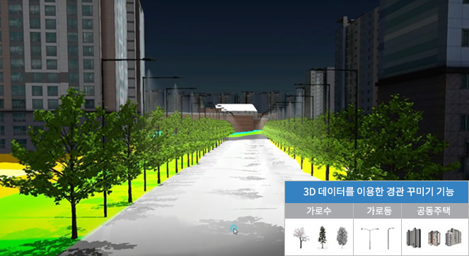
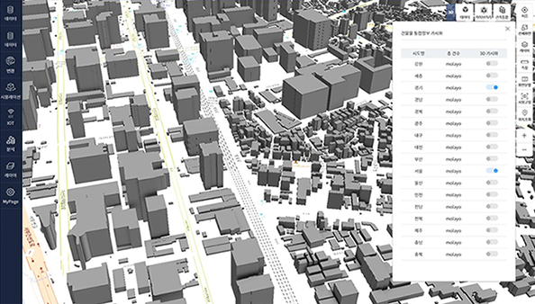
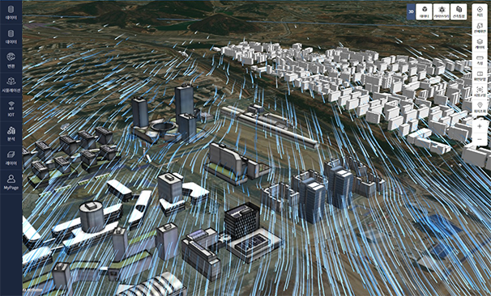
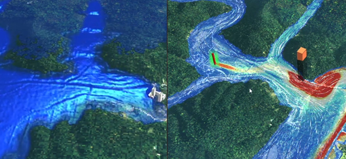
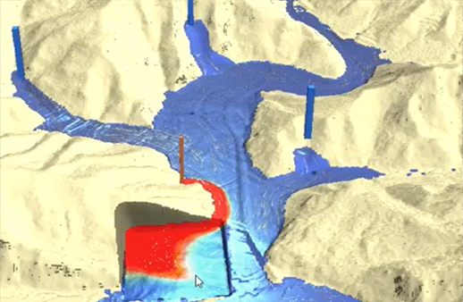
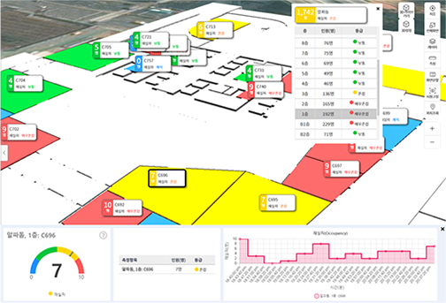
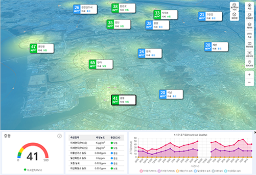

Data automatic conversion
This is a function that converts various types of 3D data such as citygml, indoorgml, ifc, 3ds, obj, collada(dae) into a format that a web browser can visualize.
When a user uploads a 3D file they own, selects the necessary options for conversion, and clicks the Convert button,
The 3D file is automatically converted and displayed on the web page.
| smart tile |
| F4D Converter |
| Terrain |
3D supported formats
| Format |
Description |
Extension |
| IFC(Industry Foundation Classes) |
Standard format for exchanging architectural BIM information |
ifc |
| 3DS(3D Studio File Format) |
File format used by AutoDesk's 3D Studio |
3ds |
| OBJ(Wavefront File Format Specification) |
3D file format containing 3D coordinates (polygonal lines and points), texture mapping, and other object information |
obj |
| COLLADA(COLLAborative Design Activity) |
XML schema-based open standard format for exchanging 3D data |
dae |
GML(Geography Markup Language)
XML(eXtensible Markup Language)
CityGML(City Geography Markup Language) |
An information model description language for exchanging and storing XML-based geographic information developed by the Open Geospatial Consortium (OGC). |
gml, xml, citygml |
| LAS(LASer) point cloud format |
An open binary format designated by ASPRS (American Society for Photogrammetry and Remote Sensing), a file format designed for the exchange and storage of Lidar point cloud data. |
las |
| JT(Jupiter Tessellation) |
Lightweight 3D model format developed by Siemens PLM Software |
jt |
Digital twin simulation
In the mago3D platform, 3D library, Extrusion Building , Wind Simulation,
Various simulations such as water simulation and land slide simulation are supported.
In addition, scalability and maintenance are easy through rule-based, 2D/3D data property management.

3D library
The 3D library provides a SimCity simulation function using 3D data such as street trees, street lights, and bridges.
You can place the 3D library at the desired location in the form of points and lines.
(Use cases: streetscape, night lighting, tree placement simulation, etc.)

Extrusion Building
Extrusion Building is an integrated building system provided by the Ministry of Land, Infrastructure and Transport.
Visualize 3D buildings based on master data (2D Shape).

Wind Simulation
Wind Simulation creates and visualizes wind field model data (Grib, Hdf, etc.) as Geojson + PNG through post-processing.
As a use case, the wind field of AlphaMet, a numerical model detailed using DEM/DSM data of Nanoweather, was expressed in mago3D.

Water Simulation
Water Simulation can visualize sewage or oil spills for use cases of hydraulic/sluice and water quality modeling simulation visualization.

Landslide Simulation
Landslide Simulation visualizes landslide modeling simulations.
Real-time sensor data (IoT)
mago3D provides various methods to link and visualize real-time simulation sensor data.
The most representative method is the form of interlocking the OGC standard specification, SensorThings API.
After storing and managing data using SensorThing API, and retrieving data through REST API, it is visualized using mago3D JS visualization engine.
Using the OGC standard SensorThings API
An International Organization for Standardization (OGC) standard specification for interconnecting Internet of Things devices, data, and applications over the web.

Real-time building occupant data display
Real-time sensor data will play an important role in digital twins as it can inform users of what is happening right away.
Occupant sensing data on the demo page is randomly generated every 10 minutes.

Real-time air quality data display (AirKorea OpenAPI)
Air quality real-time data is used in conjunction with AirKorea OpenAPI.
Real-time data provided by Air Korea is automatically processed on the mago3D platform. mago3D is ready to provide users with optimal answers.